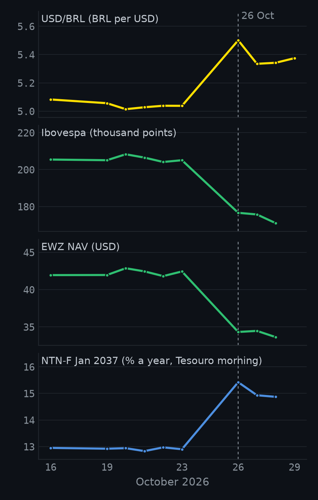
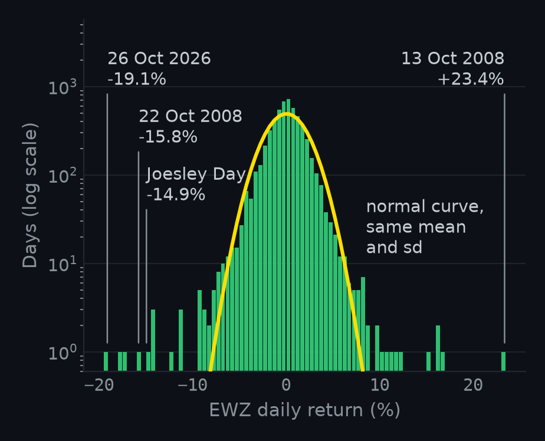
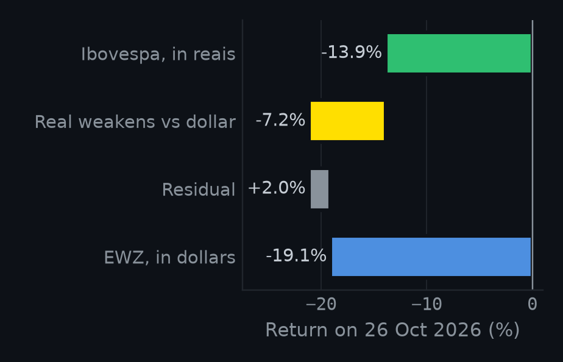
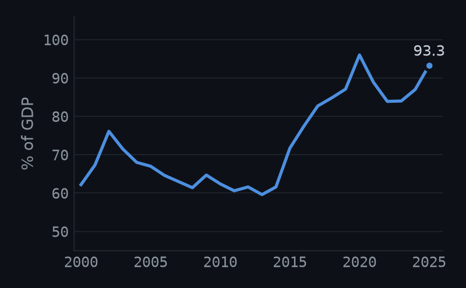

The Long End · Commentary · Market note Quantitative
Brazil Prices Lula: Anatomy of an Eight-Sigma Day
On Monday, Brazil’s main US-listed stock fund, the iShares MSCI Brazil ETF (EWZ), lost almost a fifth of its value in a single session. One market newsletter, The Kobeissi Letter, worked out that under a normal distribution a fall that size should happen about once in 58 quadrillion days. The universe is roughly five trillion days old. Either São Paulo just saw something that should take more than ten thousand lifetimes of the universe to come around, or the model was wrong.
It was the model. And why it was wrong tells you more about this selloff than the size of it does.
Markets went into Sunday’s runoff positioned for a Flávio Bolsonaro win. After the first round, investors had treated him as the candidate who would finally fix Brazil’s public finances, although he never said how. When Lula won a fourth term instead, they didn’t reprice Brazil overnight; they unwound a bet. The currency, stocks and long-term yields all moved at once because the same trade was coming off everywhere.
At a glance · Monday 26 October against Friday 23 October
- −19.1%EWZ, in dollars. An 8.6-sigma day by its own 20-year volatility.
- +9.2%The dollar against the real, at the central bank’s official PTAX rate (5.04 to 5.50).
- +2.3 to 2.5 ppThe yield on Brazil’s 2037 local-currency government bond, from about 12.9% to 15.2 to 15.4%.
- 19 vs 0.003EWZ days beyond 5 sigma since 2005, against what a normal distribution expects.
What this shows: a violent, cross-asset repricing on one day, and that “impossible” moves are routine for Brazil. What it doesn’t: whether the move was right. That part is my interpretation, and section 05 says what would prove it wrong.
Numbers: note results and the event table. EWZ is the fund’s net asset value, not its market price.
01What Happened
Lula won Sunday’s runoff against Flávio Bolsonaro. On Monday, everything Brazilian sold off at once. The Ibovespa fell 13.9% and triggered a 30-minute trading halt after its first 10% drop. The dollar jumped 9.2% against the real. Long-term local yields jumped by well over two percentage points.

One market barely flinched. Brazil’s spread on its dollar bonds, the extra yield over US Treasuries, widened by only 22 basis points (from 161 to 183). Investors dumped the currency and local assets but did not suddenly fear a default on Brazil’s dollar debt. That gap is the first clue that this was about positioning and policy risk, not solvency.
02Eight Sigma? Blame the Model
“Sigma” is the standard deviation: how much a market typically moves in a day. Over the previous 20 years EWZ moved about 2.2% on a typical day, so Monday’s 19.1% drop was about 8.6 of those typical days in one. Under a normal distribution, the bell curve, that is a once-in-334-quadrillion-days event. (The newsletter’s 58 quadrillion used the fund’s market price and a slightly different window; the conclusion is the same.)
The trouble is that markets don’t follow the bell curve, and Brazil follows it less than most. Exhibit 2 shows every EWZ day since 2005. The yellow curve is what a normal distribution predicts. The green bars are what happened.

Count the extremes and the bell curve falls apart. Since 2005, EWZ has had 19 days beyond five sigma in either direction. A normal distribution expects 0.003 of them: one such day every 6,900 years. A simple fat-tailed model fitted to the same history (a Student-t, one illustrative choice) puts a day as bad as Monday at roughly once in 22 years. Rare, but not cosmic.
And Brazil has done this before. Monday now tops the list of EWZ’s worst days since 2005, ahead of the Covid crash, the 2008 crisis and “Joesley Day”, 18 May 2017, when a recording implicating President Michel Temer knocked the fund down 14.9%. Two of the ten were Brazilian political shocks.
| Date | Move | Sigma | Event |
|---|---|---|---|
| 26 Oct 2026 | −19.1% | −8.6 | First session after the runoff |
| 12 Mar 2020 | −17.7% | −8.0 | Covid-19 selloff |
| 16 Mar 2020 | −17.3% | −7.8 | Covid-19 selloff |
| 22 Oct 2008 | −15.8% | −7.1 | Global financial crisis |
| 18 May 2017 | −14.9% | −6.7 | Joesley Day (Temer recording) |
| 15 Oct 2008 | −14.5% | −6.5 | Global financial crisis |
| 29 Sep 2008 | −14.4% | −6.5 | US House rejects the bailout bill |
| 9 Mar 2020 | −14.1% | −6.4 | Covid-19 selloff |
| 12 Nov 2008 | −12.1% | −5.5 | Unlabelled |
| 2 Oct 2008 | −11.5% | −5.2 | Unlabelled |
Election days have never looked like this, though. In the first session after each of the four previous runoffs (2002, 2014, 2018, 2022), EWZ moved between −5.8% and +3.4%. Monday was −19.1%.
03Why Dollar Investors Lost Twice
EWZ fell further than the Ibovespa because a dollar investor in Brazilian stocks holds two bets: the stocks themselves, priced in reais, and the real against the dollar. On Monday both lost. Stocks fell 13.9% in reais; the weaker real took off roughly another 7.2% once converted into dollars.

04Why the Market Freaked
My read is that Monday was mostly positioning, not a new verdict on Brazil’s solvency. Three things point that way.
- The bet was one-sided. After Bolsonaro’s first-round showing, markets treated his win as the base case and priced in a fiscal turnaround he never spelled out. Losing that bet forced the same trade to unwind across every asset at once, which is what Exhibit 1 shows.
- Credit barely moved. If investors had suddenly doubted Brazil’s ability to pay, the dollar-bond spread would have blown out. It widened 22 basis points while the local 2037 yield jumped about ten times as much. The fear was about inflation, the currency and policy, not default.
- The fiscal problem is real, but it isn’t new. Brazil’s gross government debt has climbed to about 93% of GDP (Exhibit 4), and Bloomberg Opinion’s Juan Pablo Spinetto points to roughly R$290 billion in campaign pledges, a figure he cites from Folha de S.Paulo. None of that changed between Friday and Monday. What changed was the hope that someone else would fix it.

There is also a political reason to expect some calm. Spinetto notes that right-leaning parties will hold about 60% of both chambers of the new congress, so Lula will need centrist votes to pass anything and may have to govern more pragmatically than in his third term. That is his argument, not a certainty, and it is the kind of credibility question I am working on in Political Credibility and Sovereign Credit.
05What Would Prove Me Wrong, and What to Watch
If I’m right, much of Monday’s move should fade as the trade clears and investors look at what Lula actually does. If I’m wrong, the selloff will stick.
The early evidence is mixed. By Thursday the dollar had given back about a quarter of its jump (5.37 reais, against 5.50 on Monday). By Wednesday the 2037 yield had eased about half a point on the Treasury’s morning rate but barely at all on ANBIMA’s close. Stocks kept falling: by then the Ibovespa was down 16.6% from Friday. So far the currency agrees with me more than the stock market does.
The signposts I’m watching (not recommendations):
- The finance minister. A name the market trusts would be the fastest way to reverse the move. A name it doesn’t would confirm it.
- The fiscal framework. Any concrete sign the campaign spending will be paid for, or not.
- The central bank. Whether it signals concern about the weaker real feeding into inflation.
- The local yield curve and the dollar-bond spread. Local yields that keep rising even after the positioning clears would mean the market is pricing something deeper. A widening spread would mean investors are starting to doubt repayment.
06Sources and Data
- Market data, all public: Banco Central do Brasil (PTAX, series 1); B3 (Ibovespa, and its notice of the 26 October trading halt); iShares (EWZ net asset value, daily since 2000); Tesouro Nacional and ANBIMA (NTN-F 1 January 2037); Banco Central de Reserva del Perú (EMBIG Brazil spread, series PD43665XD); IMF World Economic Outlook (gross government debt). Pulled 29 October 2026. Each series’ latest close is on or before 29 October; EWZ, the Ibovespa and the bond run to 28 October.
- Commentary cited: Juan Pablo Spinetto, Markets Are Mispricing Brazil After Lula’s Epic Comeback, Bloomberg Opinion, 26 October 2026. The Kobeissi Letter’s probability claim was checked against the data above.
- Files: results.json, event table, ten worst days, sigma counts, election days.
Research and education only. Nothing here is investment advice or a forecast.